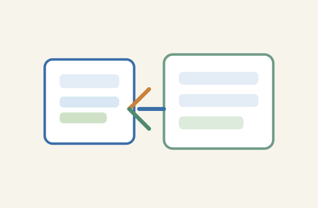

Hardware
Co je hardware?
Úvod
Hardware je vše, co se dá fyzicky dotknout u počítače. Patří sem monitor, klávesnice, myš, procesor, paměť nebo pevný disk.
Výklad
Počítač potřebuje hardware, aby mohl zpracovávat data. Procesor řeší výpočty, paměť uchovává informace, zatímco disk nebo SSD ukládá soubory na delší dobu. Bez těchto částí by počítač nebyl schopen pracovat.

Příklad
Když otevřeš webovou stránku, procesor zpracuje instrukce, RAM krátkodobě uchová data a disk uloží soubory, které potřebuješ.
Interaktivní úkol
Co je hlavní úkol procesoru?
Shrnutí
Hardware je všechno fyzické v počítači. Bez něj by software nemohl fungovat, protože programy potřebují skutečné součásti pro výpočet a ukládání dat.